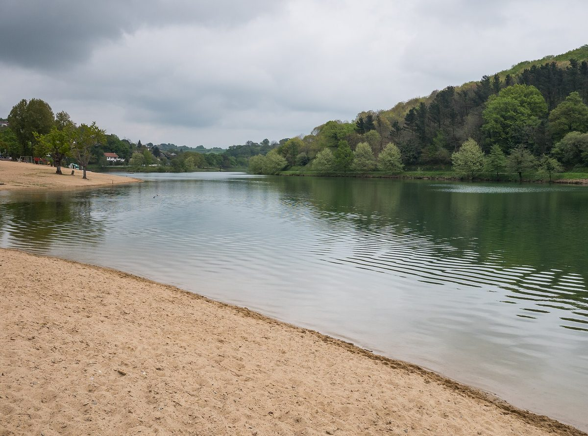

프랑스 바스크 에너지협동조합 I-Ener, 옛 쓰레기 매립장에 지역 첫 대형 태양광 착공…시민·기업·공공기관에서 100만 유로 모아

생페쉬르니벨 살루아가 발전소 사업비 약 240만 유로, 연 3.1GWh 전량 협동조합 전력판매사에 30년 공급하고 2027년 4월 가동 예정…모금은 조합 지분과 연 3% 조합원 대출 두 갈래, 의결권은 시민 40%·노동자 20%·공공기관 20%
프랑스령 바스크(이파랄데)의 에너지협동조합 I-Ener가 생페쉬르니벨(Saint-Pée-sur-Nivelle, 바스크어 센페레)의 옛 쓰레기 매립장에 이 지역 첫 대형 지상 태양광 발전소인 살루아가(Zaluaga) 공사를 시작했다. 2014년 세워진 I-Ener는 여름 전까지 시민과 기업, 공공기관에서 100만 유로를 모았는데, 조합 지분을 사는 방식과 조합원이 연 3% 이자에 10년 또는 15년 만기로 돈을 빌려주는 방식이 섞여 있어 전액이 출자금은 아니며, 이 돈은 살루아가와 함께 2026년 지붕 태양광 15곳에도 쓰인다. 약 3ha 부지에 들어서는 살루아가의 사업비는 약 240만 유로로 그중 약 60만 유로가 이번 모금에서 나오며, 연 3.1GWh를 생산해 2027년 4월 가동할 예정이다. 부지 주인인 공공 폐기물 관리 조합 빌 타 가르비(Bil Ta Garbi)가 2020년 3월 공모 절차로 I-Ener를 골랐으며, 농지나 개발 가능지를 쓰지 않는 대신 묻힌 쓰레기를 덮은 차단막을 뚫지 않도록 일반 말뚝 기초 없이 패널을 세워야 하는 과제를 안고 있다. 전기는 전량 협동조합 전력판매사 에나르히아(Enargia)에 30년 장기계약으로 공급되며, 에나르히아는 2025년 공급 지점 약 6,000곳, 연 소비량 약 40GWh 규모였다. I-Ener는 2026년 3월 공익협동조합(SCIC)으로 바뀌면서 의결권을 시민 40%, 노동자 20%, 공공기관 20%로 나눴고, 연간 생산량이 1.5GWh에서 2027년 7GWh로 늘 것으로 내다보며 바이온·우르냐·몰레·베아스크라피스트·아스파르네의 옛 매립장에도 비슷한 설비를 검토하고 있다.
시민에너지 관점
100만 유로를 조합 지분과 연 3% 조합원 대출이라는 두 갈래로 모은 것은, 위험을 나눠 지며 주인이 되려는 시민과 정해진 이자를 원하는 시민을 함께 끌어들이는 시민 금융 설계로 보인다. 시민 사업은 결정이 느리다는 우려가 있고 실제로 준비에 6년 넘게 걸렸지만, 공공 폐기물 조합이 쓸모없던 매립장을 공모로 내주고 협동조합 판매사가 30년 동안 전기를 사 주는 구조가 있었기에 작은 협동조합도 약 240만 유로 규모의 발전소를 짓게 됐다. 의결권을 시민 40%·노동자 20%·공공기관 20%로 미리 나눈 것은 낸 돈의 크기가 아니라 지역의 주체별로 결정권을 나누겠다는 뜻이고, 그래야 발전 수익과 결정이 지역에 남는다. 국내에서도 쓰레기 매립장 같은 공공 유휴부지부터 공모로 시민 협동조합에 열고, 출자와 조합원 대출을 함께 받아 사업비를 모을 수 있는 길을 제도로 마련해야 한다.
출처: Gananzia 2026-10-28 Gorka Ibáñez 원문 보기
フランス・バスクのエネルギー協同組合I-Ener、旧ごみ処分場で地域初の大型太陽光に着工…市民・企業・公的機関から100万ユーロを調達
サン＝ペ＝シュル＝ニヴェルのサルアガ発電所は事業費約240万ユーロ、年3.1GWhを全量協同組合の電力小売会社に30年供給し2027年4月稼働予定…資金は組合出資と年3％の組合員貸付の二本立て、議決権は市民40％・労働者20％・公的機関20％
フランス領バスク（イパラルデ）のエネルギー協同組合I-Enerが、サン＝ペ＝シュル＝ニヴェル（Saint-Pée-sur-Nivelle、バスク語でセンペレ）の旧ごみ処分場で、この地域初の大型地上設置型太陽光発電所「サルアガ（Zaluaga）」の工事を始めた。2014年に設立されたI-Enerは夏までに市民、企業、公的機関から100万ユーロを集めたが、組合の持分を購入する方式と、組合員が年3％の利息、期間10年または15年で資金を貸し付ける方式が混ざっているため全額が出資金というわけではなく、この資金はサルアガのほか2026年の屋根上太陽光15カ所にも充てられる。約3haの用地に建つサルアガの事業費は約240万ユーロで、そのうち約60万ユーロを今回の調達分でまかない、年3.1GWhを発電して2027年4月に稼働する予定だ。用地を所有する公的な廃棄物管理組合ビル・タ・ガルビ（Bil Ta Garbi）が2020年3月に公募手続きでI-Enerを選んだもので、農地や開発可能地を使わない代わりに、埋められたごみを覆う遮水膜を貫かないよう通常の杭基礎を使わずにパネルを設置しなければならないという課題を抱えている。電気は全量が協同組合型の電力小売会社エナルヒア（Enargia）に30年の長期契約で供給され、エナルヒアは2025年に供給地点約6,000カ所、年間消費量約40GWhの規模だった。I-Enerは2026年3月に公益協同組合（SCIC）へ移行して議決権を市民40％、労働者20％、公的機関20％に配分し、年間発電量が1.5GWhから2027年には7GWhに増えると見込むほか、バイヨンヌ（バイオナ）、ユリューニュ（ウルニャ）、モレオン（マウレ）、ベアスク＝ラピスト、アスパレン（アスパルネ）の旧処分場でも同様の設備を検討している。
市民エネルギーの視点
100万ユーロを組合出資と年3％の組合員貸付という二つのルートで集めたことは、リスクを分かち合って持ち主になろうとする市民と、決まった利息を望む市民をともに呼び込む市民金融の設計だとみられる。市民事業は意思決定が遅いとの懸念があり、実際に準備には6年以上かかったが、公的な廃棄物組合が使い道のなかった処分場を公募で開放し、協同組合の小売会社が30年間電気を買い取る仕組みがあったからこそ、小さな協同組合でも約240万ユーロ規模の発電所を建てられるようになった。議決権を市民40％・労働者20％・公的機関20％とあらかじめ分けたことは、出した金額の大きさではなく地域の主体ごとに決定権を分けるという意味であり、そうしてこそ発電収益と決定が地域に残る。韓国でもごみ処分場のような公的な遊休地から公募で市民協同組合に開放し、出資と組合員貸付を合わせて事業費を集められる道を制度として整えるべきだ。
出典: Gananzia 2026-10-28 ゴルカ・イバニェス（Gorka Ibáñez） 原文を読む
法国巴斯克能源合作社I-Ener在旧垃圾填埋场开建当地首座大型光伏电站…向市民、企业和公共机构募得100万欧元
圣佩-苏尔-尼韦勒的Zaluaga电站总投资约240万欧元，年发电3.1GWh全部以30年合同售予合作社型售电公司，预计2027年4月投运…资金分为合作社入股和年息3%的社员借款两种，表决权为市民40%、劳动者20%、公共机构20%
法属巴斯克地区（Iparralde）的能源合作社I-Ener已在圣佩-苏尔-尼韦勒（Saint-Pée-sur-Nivelle，巴斯克语称Senpere）的旧垃圾填埋场上，开工建设当地首座大型地面光伏电站Zaluaga。成立于2014年的I-Ener在今年夏天之前向市民、企业和公共机构募得100万欧元，其中既有购买合作社股份的方式，也有社员以年息3%、期限10年或15年向合作社借款的方式，因此并非全部都是出资；这笔资金除用于Zaluaga外，还将用于2026年的15处屋顶光伏。Zaluaga占地约3公顷，总投资约240万欧元，其中约60万欧元来自此次募资，预计年发电3.1GWh，2027年4月投运。场地所有者、公共废弃物管理联合体Bil Ta Garbi于2020年3月通过征集意向程序选定了I-Ener；项目不占用农地或可开发用地，但为避免刺穿覆盖填埋垃圾的隔离膜，光伏板不能使用常规桩基，这是一项技术难题。所发电力将以30年长期合同全部供应给合作社型售电公司Enargia，该公司2025年约有6,000个供电点、年用电量约40GWh。I-Ener于2026年3月转型为公益合作社（SCIC），将表决权分配为市民40%、劳动者20%、公共机构20%；合作社预计年发电量将从1.5GWh增至2027年的7GWh，并正在研究在巴约讷（Baiona）、于吕涅（Urruña）、莫莱昂（Maule）、贝阿斯克-拉皮斯特和阿斯帕伦（Hazparne）的旧填埋场建设类似设施。
市民能源视角
把100万欧元分成合作社入股和年息3%的社员借款两条渠道来募集，可以看作一种同时吸引愿意共担风险、成为主人的市民和希望获得固定利息的市民的市民金融设计。有人担心市民项目决策缓慢，这个项目确实也筹备了6年多，但正是因为公共废弃物联合体通过公开征集让出了闲置的填埋场、合作社售电公司承诺30年购电，一个小合作社才建得起约240万欧元规模的电站。事先把表决权按市民40%、劳动者20%、公共机构20%分配，意味着决定权不是按出资多少，而是按地方各类主体来分配，这样发电收益和决策权才能留在当地。韩国也应从垃圾填埋场等公共闲置用地开始，通过公开征集向市民合作社开放，并在制度上为同时以入股和社员借款筹集项目资金开辟道路。
来源: Gananzia 2026-10-28 Gorka Ibáñez 查看原文
French Basque energy co-operative I-Ener starts building the area's first large solar park on a former landfill after raising €1 million from citizens, businesses and public bodies
The Zaluaga plant at Saint-Pée-sur-Nivelle costs about €2.4 million and will sell all 3.1GWh a year to a co-operative electricity supplier under a 30-year contract from April 2027; the money came as co-op shares and 3% member loans, and votes are split 40% citizens, 20% workers, 20% public bodies
I-Ener, an energy co-operative in the French Basque Country (Iparralde), has begun building Zaluaga, the area's first large ground-mounted solar park, on a former rubbish landfill in Saint-Pée-sur-Nivelle (Senpere in Basque). Founded in 2014, I-Ener raised €1 million from citizens, businesses and public bodies before the summer, but the sum mixes purchases of co-op shares with member loans paying 3% a year over 10 or 15 years, so not all of it is equity; the money will also fund 15 rooftop installations in 2026. Zaluaga, on a site of about 3 ha, will cost about €2.4 million, of which roughly €600,000 comes from this fundraising, and is expected to produce 3.1GWh a year once it starts operating in April 2027. The site's owner, the public waste management syndicate Bil Ta Garbi, chose I-Ener through a call for expressions of interest in March 2020; the project uses no farmland or building land, but the panels cannot rest on conventional piles because they would pierce the membrane sealing the buried waste. All the electricity will go to the co-operative supplier Enargia under a 30-year contract; in 2025 Enargia served about 6,000 supply points consuming about 40GWh a year. I-Ener became a collective-interest co-operative (SCIC) in March 2026, giving citizens 40% of the votes and workers and public bodies 20% each, and it expects its annual output to rise from 1.5GWh to 7GWh in 2027 while studying similar plants on old landfills in Bayonne (Baiona), Urrugne (Urruña), Mauléon (Maule), Béhasque-Lapiste and Hasparren (Hazparne).
Citizen Energy View
Raising €1 million through two channels, co-op shares and 3% member loans, looks like a citizen-finance design that draws in both people willing to share the risk as owners and people who want a fixed return. Citizen projects are often said to be slow, and this one did take more than six years to prepare, but because a public waste syndicate opened an unused landfill through a public call and a co-operative supplier agreed to buy the power for 30 years, a small co-op was able to build a plant costing about €2.4 million. Splitting votes in advance at 40% citizens, 20% workers and 20% public bodies means decision-making is shared among the local stakeholders rather than by the size of each investment, and that is what keeps both the revenue and the decisions in the area. Korea should start by opening idle public land such as old landfills to citizen co-operatives through public calls, and make it possible in law to finance such projects with both member shares and member loans.
Source: Gananzia 2026-10-28 Gorka Ibáñez Read the original